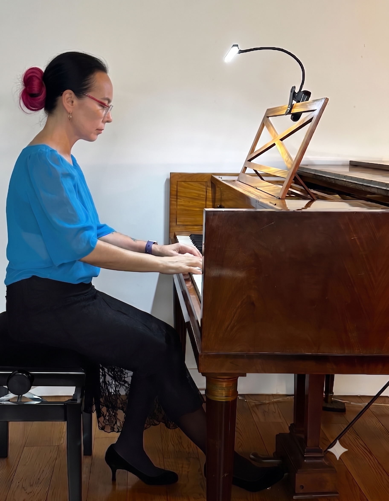

Thuy Kieu Vuong
Thérapeute & Artiste Claveciniste

Un parcours singulier et harmonieux unissant l'expression artistique de haut niveau, la sensibilité musicale et l'accompagnement thérapeutique.
Sophrologie, Hypnose, EMDR & Méditation
Compétences & Formations
- Sophrologue – ESSA Formations
- Formation à la sophrologie ludique – PSL (Claudia Sanchez et Ricardo Lopez)
- Formée à l'animation d'ateliers Gestion du stress – Gestion du sommeil en Entreprise par Sophro-Trainer
- Certificat de Praticien en Hypnose – B & J-M Caplain
- EMDR – Formée par un membre de l'Institut EMDR France à la technique de Francine Shapiro
- Protocoles MBSR/MBCT – Formés par le Dr Gilles Pentecôte
- "Instructeur en milieu scolaire et éducatif" méditation de pleine conscience et de pleine présence. Association Méditation dans l'Enseignement
Pratiques professionnelles
- Accompagnements individuels d'adultes
- Accompagnement d'artistes (musiciens, comédiens, danseurs, ...)
- Sophrologie et méditation au Centre Ressource Paris VIème – "Aider chaque personne à mieux vivre avec ou après le cancer"
- Atelier Relaxation et Méditation. Studio Keller, Paris 11ème
- Interventions en écoles élémentaires et collège – Paris 11/12
Formation musicale
Clavecin
- Admission au concours externe de professeur d'enseignement artistique. Liste d'aptitude spécialité : musique ; discipline : clavecin
- Diplôme d'Etat de musique ancienne-Clavecin
- Diplôme de soliste en clavecin – Hogeschool voor de Kunsten, Utrecht (Pays-Bas). Classe de Glen Wilson & Siebe Henstra
- Diplôme de perfectionnement – Mention très bien avec les félicitations du jury. CRR Toulouse. Classe de Jan-Willem Jansen
- Médaille d'or à l'unanimité avec les félicitations du jury. CRR Toulouse
- Certificat de fin d'études – Mention très bien à l'unanimité. CRR Grenoble
Accompagnement et Basse Continue
- Centre d'Etudes et de Pratique de la Musique Ancienne (Toulouse)
Orgue
- Première médaille (Classe de Michel Bouvard) – CRR Toulouse
Formations complémentaires
- Harmonie - Histoire de la musique
- Musique Electro-acoustique, classe de Xavier Garcia
- Harpe
Concerts et spectacles (extraits)
Concert solo piano et projections d'images
Concerts solo clavecin et projections d'images sur des musiques du répertoire pianistique, arrangements Thuy Kieu Vuong
Tournée à Los Angeles avec l'ensemble "La Turbulente"
Collaboration avec le compositeur Michel Bellier. Pièces pour clavecin
Création avec la compagnie de danse contemporaine "Mémé banjo" dirigée par Lionel Hoche pour le spectacle "sinuosus". Tournées en France et à l'étranger
Concert à New York. Intégrale des pièces pour clavecin écrites par David Bartel à Thuy Kieu Vuong
Concerts-conférence réguliers au musée de la musique de la cité de la Villette
Travail vidéographique avec la plasticienne Catie de Balmann
Enregistrement d'une bande sonore pour la chorégraphe Stéphanie Aubin. Musique de Nicolas Frize
Enregistrement du CD "Aborigène" avec Michel Godard
Collaboration régulière avec Michel Godard (Serpent et tuba). Cycles d'émissions à France Musiques. Concert en France et à l'étranger avec la formation "Le chant du serpent" (direction : Michel Godard en collaboration avec Jean Tubéry, cornet à bouquin)
Clavecin solo dans un spectacle de danse contemporaine en collaboration avec Michel Raji, danseur-chorégraphe
Pratique personnelle
- Méditation
- Pratique du Butô
- Retraites de Pleine Conscience au village des Pruniers, monastère bouddhiste zen créé par Thich Nhat Hanh
- Analyse freudienne
- Tranches de thérapie régulières
- Supervisions